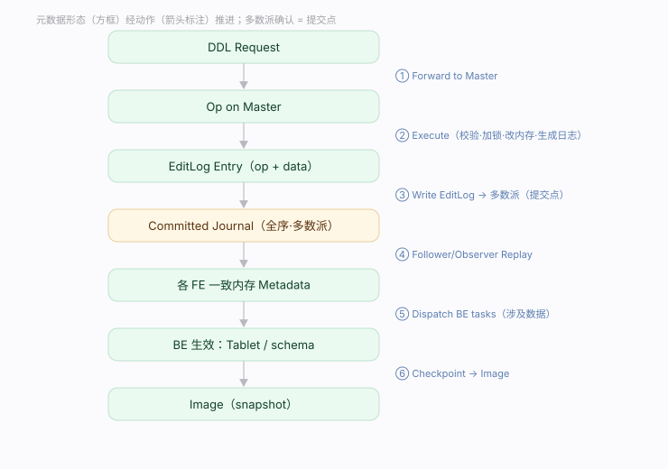
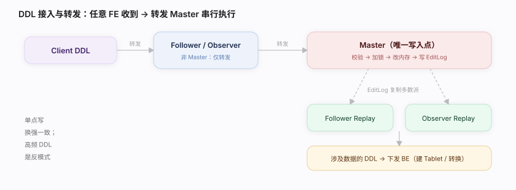
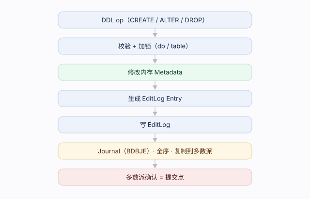
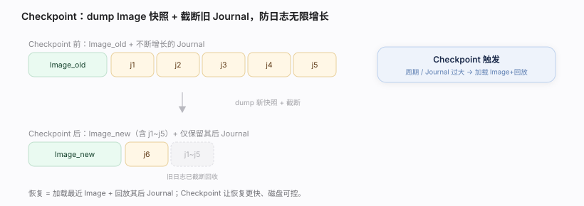
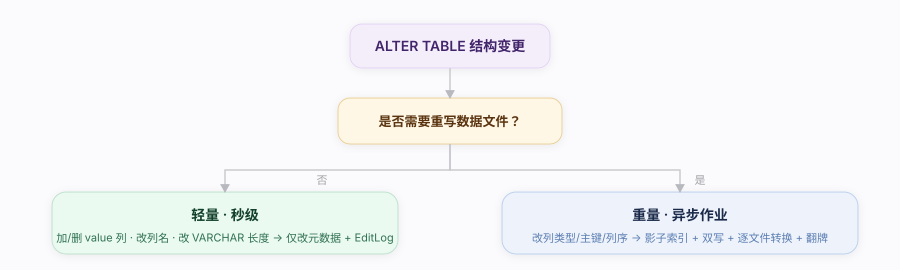
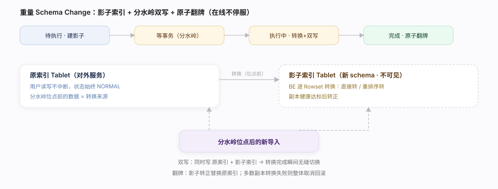
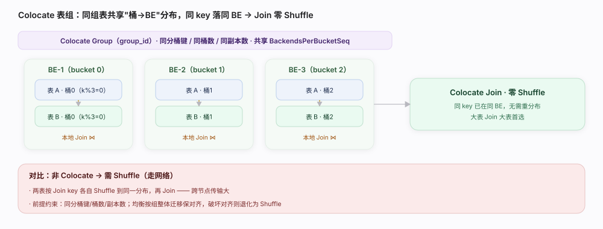
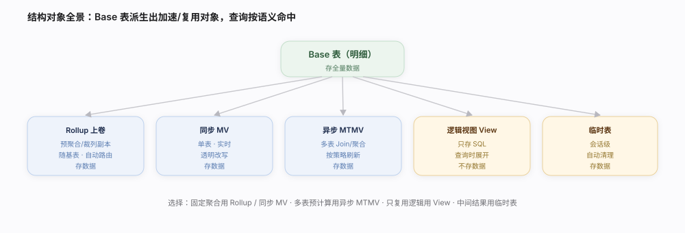
light_schema_change：启用轻量 Schema Change（加/删列秒级）。dynamic_partition.enable / time_unit / start / end / prefix / buckets。AUTO PARTITION BY（写入时按值自动建分区）。colocate_with：加入 Colocate 表组（同组同分布，Join 免 Shuffle）。BUCKETS auto 或手动指定，决定并行度上限；单个 Tablet 数据量宜控制在合理区间（过多小 Tablet 抬高元数据与调度开销，过少限制并行）。replication_num / replication_allocation：副本数与按 Tag（资源组/机房）的副本分布。catalog_trash_expire_second 控软删除保留期，权衡可恢复性与占用。RECOVER；FORCE 不可逆。| 类别 | 典型 DDL | BE 下发 | FE 是否阻塞等 |
|---|---|---|---|
| 异步作业 | Schema Change / Rollup / 物化视图 | 建 Tablet + 转换数据 + 构建索引 | 否,作业驱动、BE 回报 |
| 同步特例 | CREATE TABLE | 建空 Tablet 副本 | 是,全副本回报或超时才写 EditLog |
| 维度 | 轻量 Lightweight | 重量 Heavyweight |
|---|---|---|
| 典型变更 | 加/删 value 列、改列名、改 VARCHAR 长度 | 改列类型、改主键、改列序、改排序键 |
| 数据文件 | 不重写 | 逐文件重写 |
| 耗时 | 秒级 | 分钟 ~ 天 |
| 额外存储 | 无 | 转换期近翻倍 |
| 机制 | 改元数据 + EditLog | 影子索引 + 双写 + 异步作业 |
| 阶段 | 动作 |
|---|---|
| 待执行 | 建影子索引 Tablet（平行于原索引） |
| 等事务（分水岭） | 等分水岭位点前的事务完成；之后新写入靠双写兜底 |
| 执行中 | 逐文件读基线 → 列映射转换 → 写影子；不改排序键"直接转"，改了则"重排序转" |
| 完成 / 翻牌 | 副本健康则影子索引转正替换原索引；多数副本失败则取消回滚 |
| 层级 | 划分依据 | 作用 |
|---|---|---|
| Partition 分区 | 时间/范围/枚举 | 分区裁剪、生命周期管理（TTL/冷热） |
| Bucket / Tablet 分桶 | Hash / Random | 并行、副本、均衡的最小单位 |
| Replica 副本 | 按 Tag 分布 | 可用性与读吞吐 |
| 类型 | 依据 | 用途 |
| 无分区 | 整表一个隐式分区 | 小表 |
| Range | 范围（常按时间） | 时序 / 生命周期分层 |
| List | 枚举值列表 | 离散维度 |
| 动态分区 | 按时间滚动自动增删 | 时序自维护 |
| 自动分区 | 写入时按分区键值自动建 | 免预建分区 |
| 对象 | 存数据 | 更新方式 | 多表 | 查询命中 | 适用 |
|---|---|---|---|---|---|
| Rollup 上卷 | 是（派生） | 随基表 | 否 | 自动路由 | 固定维度聚合加速 |
| 同步物化视图 | 是 | 实时随基表 | 否 | 透明改写 | 单表加速 |
| 异步物化视图 | 是 | 按策略刷新 | 是 | 透明改写 | 多表预计算 |
| 逻辑视图 View | 否 | — | 是 | 查询时展开 | 逻辑复用 |
| 临时表 | 是（会话级） | — | — | — | 中间结果 |
| 方式 | BE 上 Tablet | 可恢复性 | 适用 |
|---|---|---|---|
| DROP（默认） | 延迟删除（回收站过期或汇报时） | 保留期内可 RECOVER | 常规删除、防误删 |
| DROP ... FORCE | 立即物理删除 | 不可逆 | 确认无需后彻底清理 |
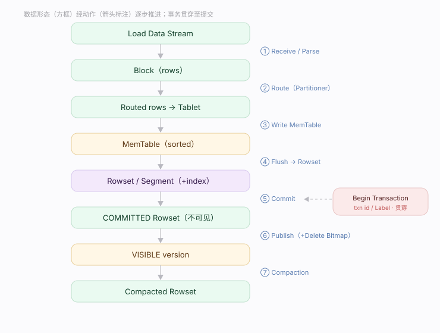
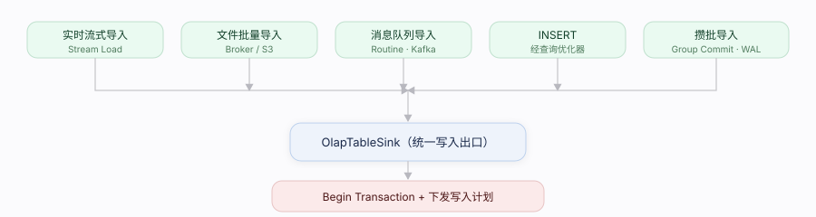
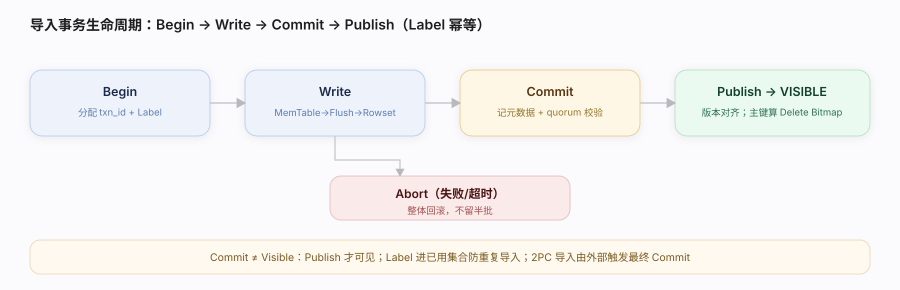
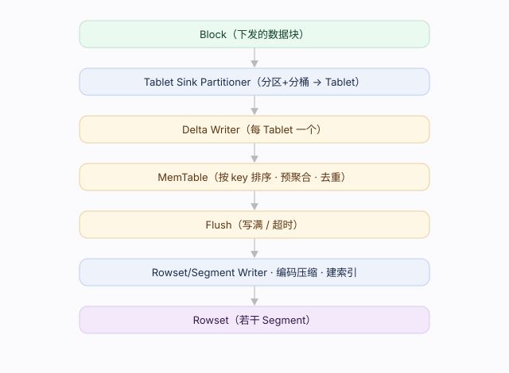
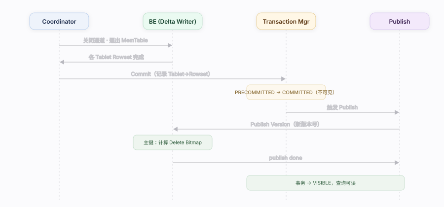
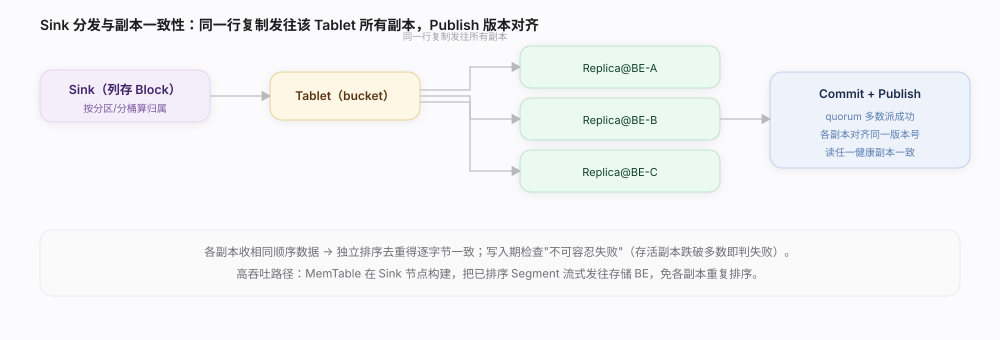
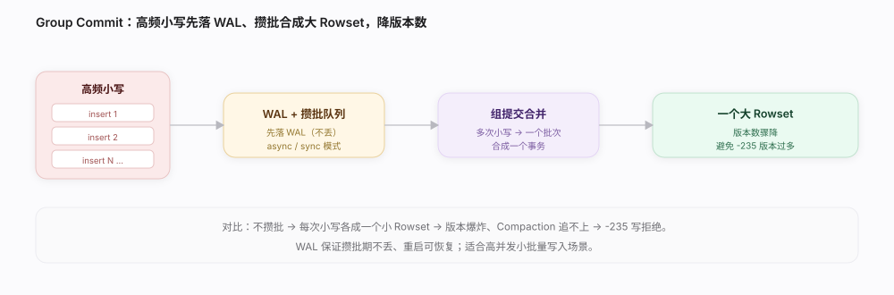
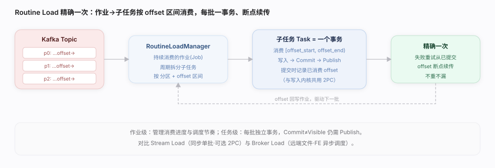
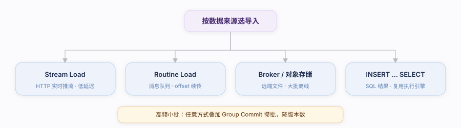
replication_num：副本数（默认 3）；enable_unique_key_merge_on_write：主键写时合并。max_filter_ratio：容错阈值；strict_mode：严格模式（类型不合规是否拒绝）。group_commit（off / sync_mode / async_mode）：攒批导入，缓解高频小写。function_column.sequence_col 指定 sequence 列做冲突裁决。partial_columns=true（只写变更列）。| 操作 | 机制 | 前提 / 裁决 | 适用 |
|---|---|---|---|
| UPDATE | 写新值 + Delete Bitmap 标记旧行 | 主键（MoW）表 | 行级更新 |
| 部分列更新 | 只写变更列、其余列保留 | 主键表，未写列有默认值或取旧行 | 宽表少量列更新 |
| 条件 DELETE | 谓词标记 / 删除数据集，不重写全量 | — | 按条件删 |
| 并发同键写 | 按 sequence 列值高者胜 | 指定 sequence 列 | 乱序写入定最终值 |
| Group Commit | 先落 WAL 再异步/同步攒批入库 | — | 高频小写合并 |
| 导入方式 | 数据来源 | 事务发起 | 断点 / 幂等 | 适用 |
|---|---|---|---|---|
| Stream Load | HTTP 同步推流 | 客户端，单次一事务 | Label 幂等，可选 2PC | 实时小批、低延迟 |
| Broker / 对象存储 Load | 远端文件（HDFS/S3） | FE 异步调度分发 | Label 幂等 | 大批量离线 |
| Routine Load | 消息队列持续消费 | FE 周期拆子任务、每批一事务 | offset 断点续传 | 流式精确一次 |
| INSERT ... SELECT | SQL 查询结果 | Coordinator 内部开事务 | Label 幂等 | 引擎内加工写回 |
| Group Commit | 上述之上攒批 | 合并进一个批次 | WAL 保障 | 高频小写降版本数 |
| 错误码 | 含义 | 触发 | 应对 |
|---|---|---|---|
| -235 TOO_MANY_VERSION | Tablet 版本数超上限 | 小批高频写、Compaction 追不上 | 攒批 / Group Commit、提 Compaction 并发 |
| -238 TOO_MANY_SEGMENTS | 单 Rowset Segment 过多 | 单批数据过大 / 倾斜 | 拆批、调分桶、控单批大小 |
| -230 VERSION_ALREADY_MERGED | 请求版本已被合并 | 读到已 Compaction 掉的旧版本 | 重取快照后重试 |
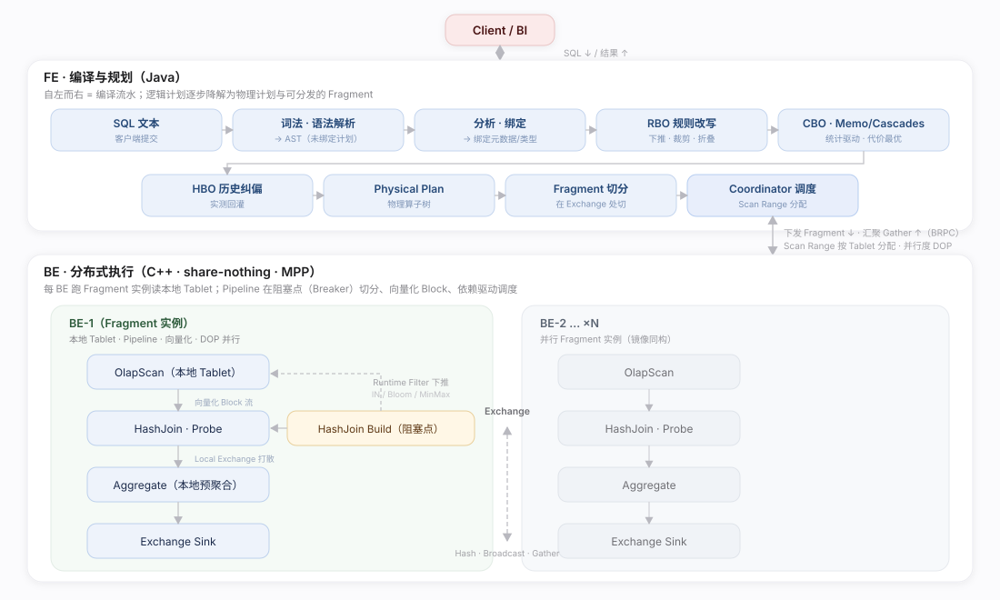
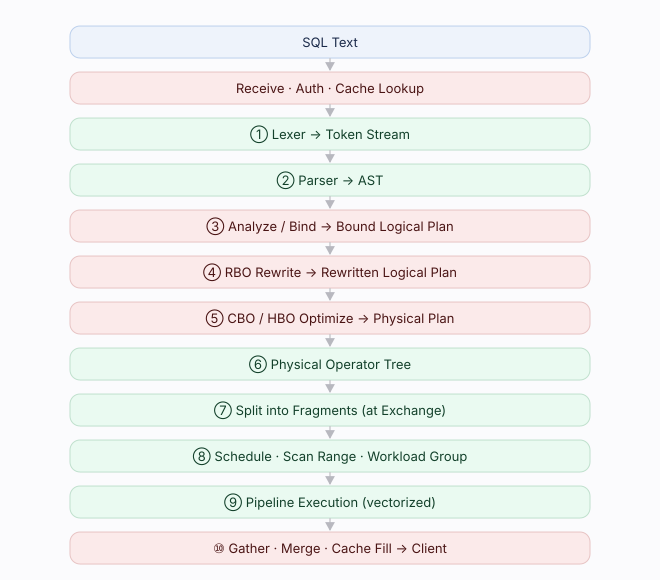
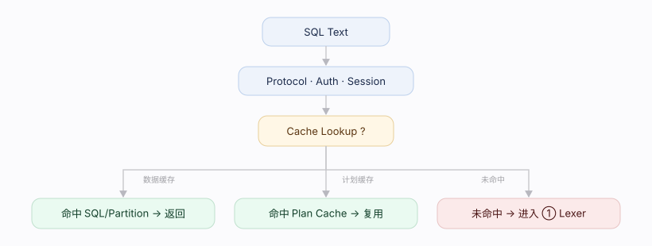
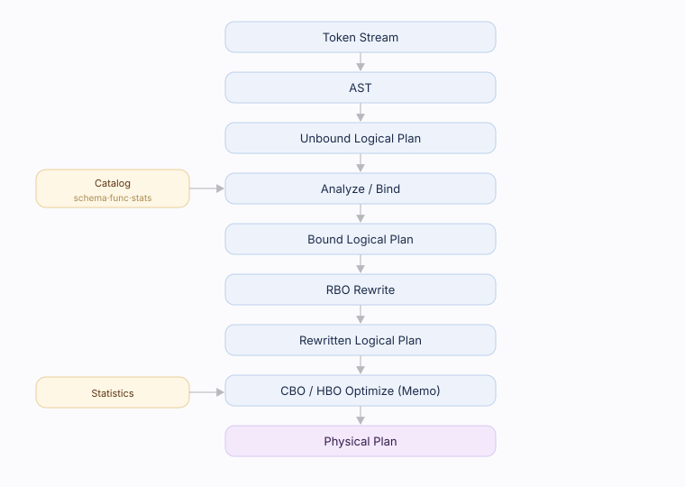
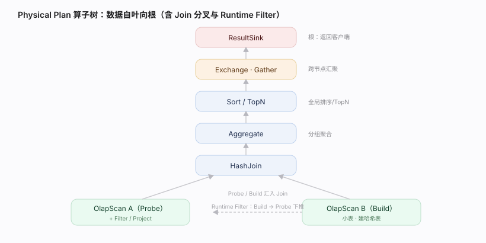
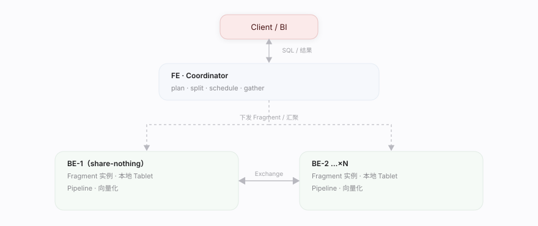
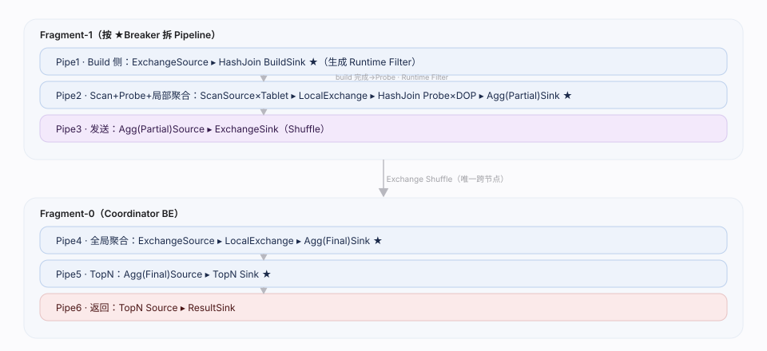
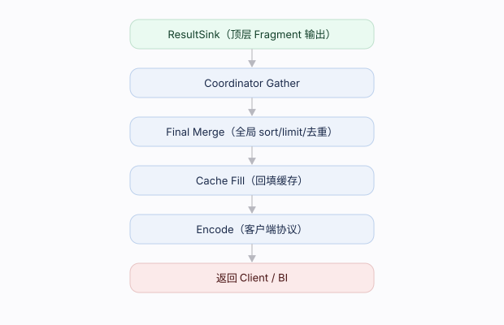
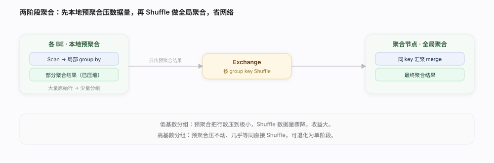
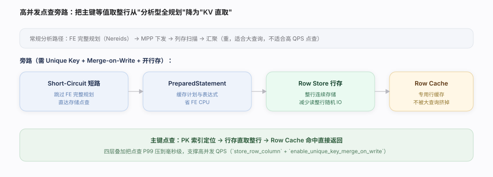
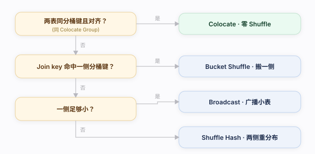
parallel_pipeline_task_num：单 Fragment 每 BE 的并行度（DOP），一般对齐核数。runtime_filter_type / runtime_filter_mode：运行时过滤器类型（IN / Bloom / MinMax）与全局/本地模式。enable_sql_cache：结果缓存开关；exec_mem_limit / query_timeout：单查询内存上限 / 超时。store_row_column + enable_unique_key_merge_on_write（开行存 + MoW）。EXPLAIN / EXPLAIN VERBOSE 看计划与分布方式，Query Profile 看各算子耗时。SELECT * 破坏列裁剪：宽表只查少数列务必显式列名。| EXPLAIN 级 | 阶段 | 产物 |
|---|---|---|
| PARSED | 词法 / 语法 | AST → Unbound LogicalPlan |
| ANALYZED | 分析 · 绑定 | Bound LogicalPlan（绑定元数据/类型/权限） |
| REWRITTEN | RBO 规则改写 | Rewritten LogicalPlan |
| OPTIMIZED | CBO 代价择优 | PhysicalPlan（Memo 选最优） |
| 阶段 | 定位 | 手段 | 依据 |
|---|---|---|---|
| RBO 规则改写 | 定形（总不更差） | 谓词下推、列裁剪、常量折叠、子查询解嵌套、Limit/TopN 下推、聚合下推、分区裁剪 | 无条件等价规则 |
| CBO 代价择优 | 定量（选最优） | 在 Memo 等价类结构中记忆化 + 剪枝搜索，定 Join 顺序 / 分布方式 / 聚合方式 | 统计信息（行数/NDV/直方图） |
| HBO 历史纠偏 | 纠偏（估不准时） | 用重复查询的实测行数/耗时回灌，纠正估算偏差 | 历史执行反馈 |
| 形态 | 结构 | 适用 | 代价 |
|---|---|---|---|
| IN | 精确取值集合 | 取值少、选择率高 | 取值多时膨胀 |
| Bloom | 概率位图 | 取值多 | 有假阳性、省内存 |
| MinMax | 上下界 | 范围过滤 | 最轻量、过滤弱 |
| 层 | 作用 |
|---|---|
| Row Store（行存） | 减少读整行的随机 IO |
| Short-Circuit（短路） | 跳过 FE 完整规划直达存储 |
| PreparedStatement | 缓存计划与表达式，省 FE CPU |
| Row Cache（行缓存） | 专用行缓存，避免被大查询挤掉 Page Cache |
| 分布方式 | 前提 | 数据搬运 | 适用 |
|---|---|---|---|
| Colocate Join | 两表同分桶键、同分布 | 零 Shuffle | 大表 Join 大表首选 |
| Bucket Shuffle | Join key 命中一侧分桶键 | 只搬另一侧 | 少搬一半数据 |
| Shuffle (Hash) | 无 | 两侧按 key 重分布 | 最通用兜底 |
| Broadcast | 一侧足够小 | 广播小表到每节点 | 小表足够小时最快 |
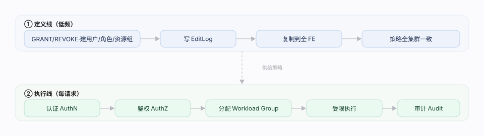
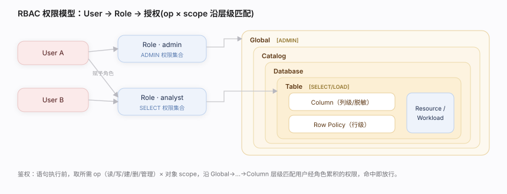
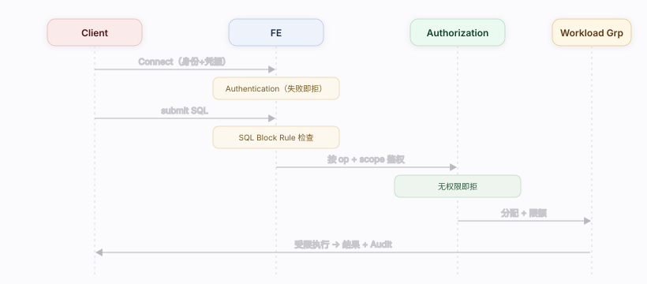
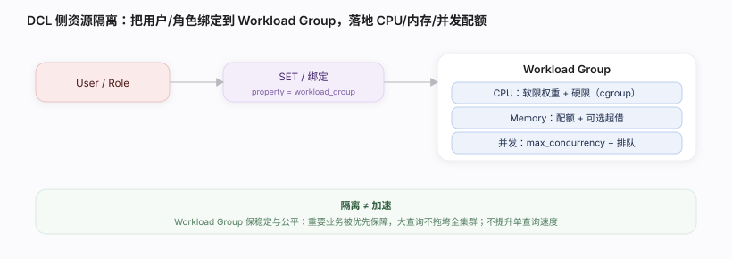
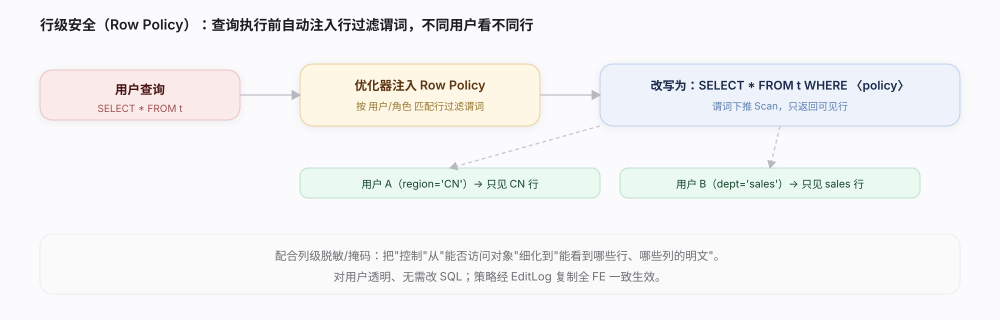
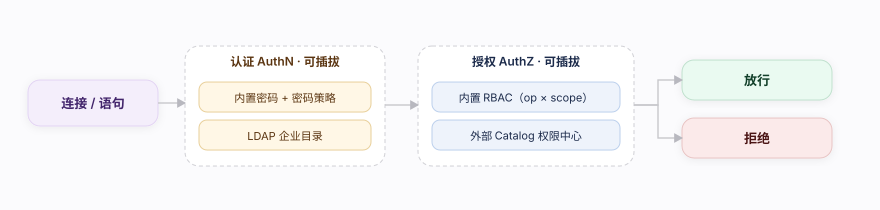
cpu_share）/ 硬限、memory_limit、max_concurrency / max_queue_size / queue_timeout（并发/排队/排队超时）。CREATE ROW POLICY（行级过滤）、列脱敏/掩码策略。| 粒度 | 机制 | 效果 |
|---|---|---|
| 行级安全 Row Policy | 为用户/角色定义行过滤谓词，查询自动附加 | 不同用户看不同行 |
| 列级脱敏 / 掩码 | 对敏感列按策略返回脱敏值 | 同列不同用户看明文/掩码 |
| 列级权限 | Scope 到 Column 的授权 | 控制可见列集合 |
| 环节 | 时点 | 可选实现 | 判定 |
|---|---|---|---|
| 认证 AuthN | 连接建立 | 内置密码（+ 密码策略）、LDAP 目录 | 换取身份/角色 |
| 授权 AuthZ | 语句执行前 | 内置 RBAC、外部权限中心 | op × scope 沿层级匹配累积权限 |
| 层面 | 手段 | 作用 |
|---|---|---|
| 传输加密 | 客户端↔FE、节点间 TLS/SSL | 防链路窃听 |
| 静态加密 | 底层存储 / KMS 落盘加密 | 防磁盘泄露 |
| 字段加密 | 应用层加解密函数（AES 等） | 敏感字段列级保护 |
| 审计 | 审计插件记录 SQL / 耗时 / 扫描量 | 合规留痕、事后追溯 |
| 权限 | 作用域 | 用途 |
|---|---|---|
| ADMIN_PRIV | Global | 超级管理，几乎不受限 |
| GRANT_PRIV | Global→Table | 授予 / 回收权限 |
| NODE_PRIV | Global | 节点管理（增删 FE/BE） |
| SELECT_PRIV | Catalog→Column | 读 |
| LOAD_PRIV | Catalog→Table | 写入 / 导入 |
| ALTER_PRIV | Catalog→Table | 改结构 |
| CREATE_PRIV | Catalog→Table | 建对象 |
| DROP_PRIV | Catalog→Table | 删对象 |
| USAGE_PRIV | Resource / Workload Group | 使用资源 / 资源组 |
| SHOW_VIEW_PRIV | Table | 查看视图定义 |
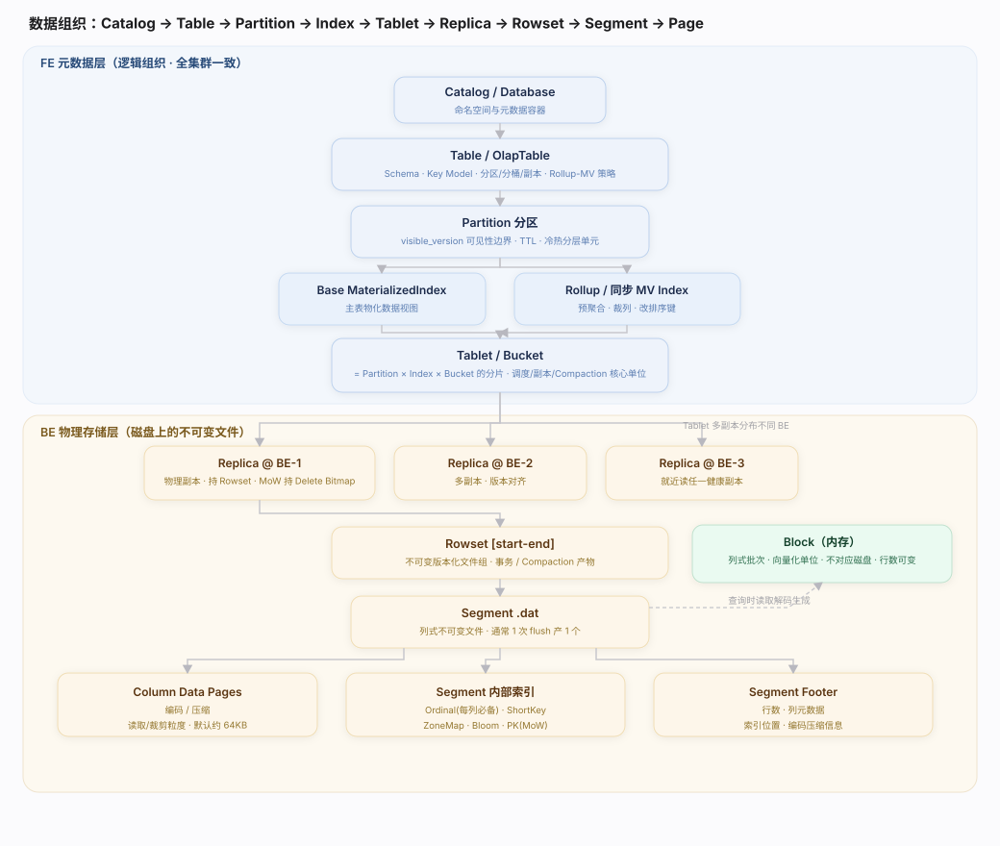
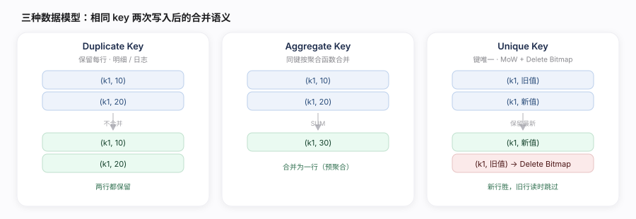
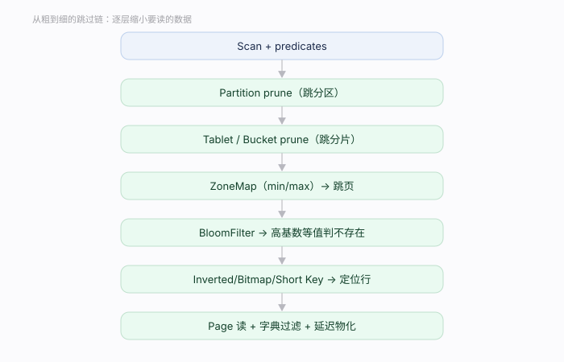
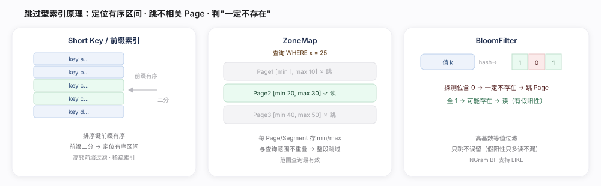
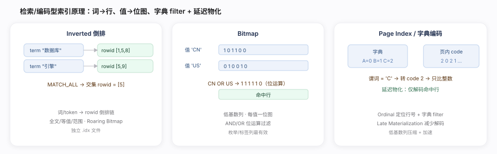
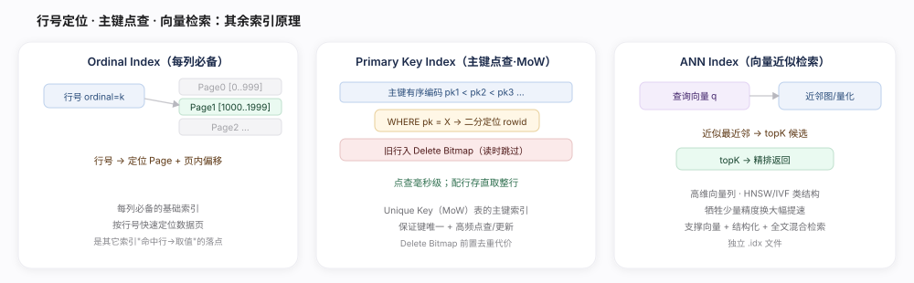
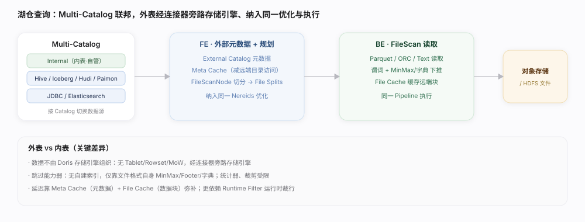
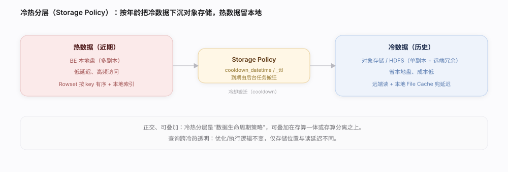
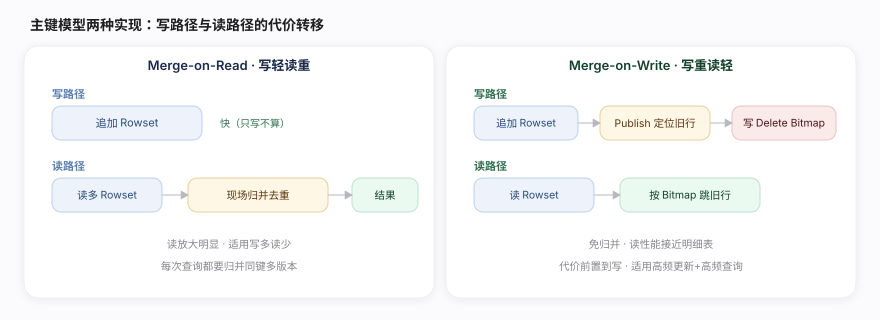
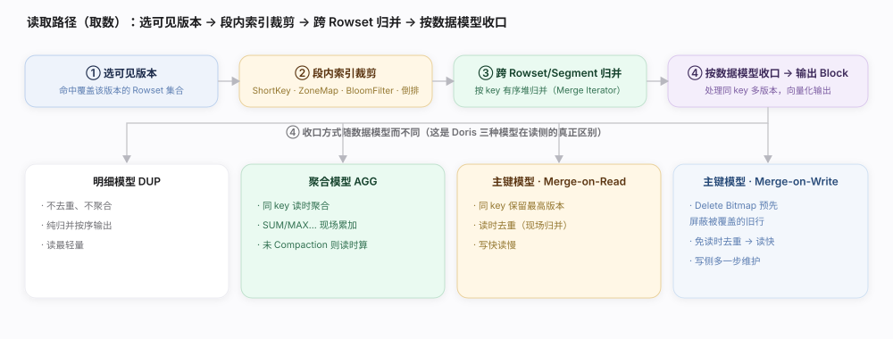
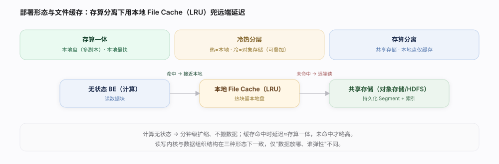
replication_num（副本数）、分桶数（BUCKETS）、compression（压缩算法）。bloom_filter_columns（布隆）、CREATE INDEX ... USING INVERTED（倒排）、建表列顺序即前缀/排序键（默认前 36 字节 / 3 列）。STORAGE POLICY + cooldown_datetime / storage_cooldown_ttl（冷数据下沉对象存储）。enable_unique_key_merge_on_write；点查：store_row_column（行存）。| 模型 | 写入行为 | 更新 | 加速 | 适用 |
|---|---|---|---|---|
| Duplicate | 保留每行原样 | 不支持 | 明细扫描 | 日志/明细 |
| Aggregate | 同键按聚合函数合并 | 预聚合累加 | 预聚合下推 | 固定维度汇总 |
| Unique | 键唯一、保留最新 | 支持（MoW） | 主键点查/更新 | 实时更新维表 |
| 索引 | 粒度 | 判定 | 适用 |
|---|---|---|---|
| Short Key / 前缀 | 排序键前缀 | 定位有序区间 | 高频前缀过滤 |
| ZoneMap | Page/Segment | min/max 跳过 | 范围查询 |
| BloomFilter | 列 | 判"一定不存在" | 高基数等值 |
| Inverted 倒排 | 词/token | 命中候选行 | 文本/日志检索 |
| Bitmap | 列 | 位运算过滤 | 低基数枚举 |
| Page Index | Page 内 | 字典 filter + 延迟物化 | 减少解码 |
| Ordinal | 每列 | 行号 → 页内偏移 | 定位数据页（基础索引） |
| Primary Key | 主键（MoW） | 有序二分定位 rowid | 主键点查/更新 |
| NGram BloomFilter | 列 | n-gram 概率过滤 | LIKE / 子串 |
| ANN | 向量列 | 近似最近邻 topK | 向量检索 |
| 编码 | 适用列 | 原理 |
|---|---|---|
| PLAIN | 通用兜底 | 原样存 |
| DICT 字典 | 低基数 | 存字典 id，重复值高压缩 |
| RLE 行程 | 连续重复 / 布尔 | 存值 + 游程长度 |
| BIT_SHUFFLE | 数值列 | 按位重排提升压缩率 |
| 模型 | 读侧收口 | 读性能 |
|---|---|---|
| Duplicate 明细 | 不去重,直接输出 | 最快 |
| Aggregate 聚合 | 读时按 key 聚合 | 中 |
| Unique · MoR | 现场取最新版本 | 慢 |
| Unique · MoW | Delete Bitmap 预屏蔽旧行,免读时去重 | 快 |
| 实现 | 写入 | 读取 | 读放大 | 适用 |
|---|---|---|---|---|
| Merge-on-Read | 只追加（快） | 同键多版本现场归并去重 | 明显 | 写多读少 |
| Merge-on-Write | Publish 期算 Delete Bitmap（重） | 按 Bitmap 跳旧行、免归并 | 接近明细表 | 高频更新 + 高频查询 |
| 形态 | 数据位置 | 弹性 | 读延迟 | 适用 |
|---|---|---|---|---|
| 存算一体 | 本地盘（多副本） | 扩缩需搬数据 | 本地最快 | 稳定高性能 |
| 冷热分层 | 热数据本地 + 冷数据远端 | 冷数据省本地盘 | 冷数据稍慢 | 长周期历史数据 |
| 存算分离 | 共享存储（对象存储/HDFS） | 计算无状态、分钟级扩缩不搬数据 | 远端 + 本地 File Cache 兜底 | 弹性/多租户 |
| 决策 | 原则 | 收益 / 风险 |
|---|---|---|
| 排序键 / 前缀索引 | 列顺序即排序，高频过滤/低基数列放前（默认前若干列 / 36 字节） | ZoneMap 与前缀跳过最有效 |
| 分桶数 | 单 Tablet 数据量适中（经验百 MB~GB），桶数 ≈ 数据量/单桶目标，对齐并行度 | 过多小 Tablet 抬元数据与调度开销 |
| 分桶键 | 选高基数、Join/聚合常用列 | 支撑 Colocate / Bucket Shuffle |
| 索引选择 | 高基数等值→Bloom；文本→倒排；低基数枚举→Bitmap | 按查询模式取舍，勿滥建 |
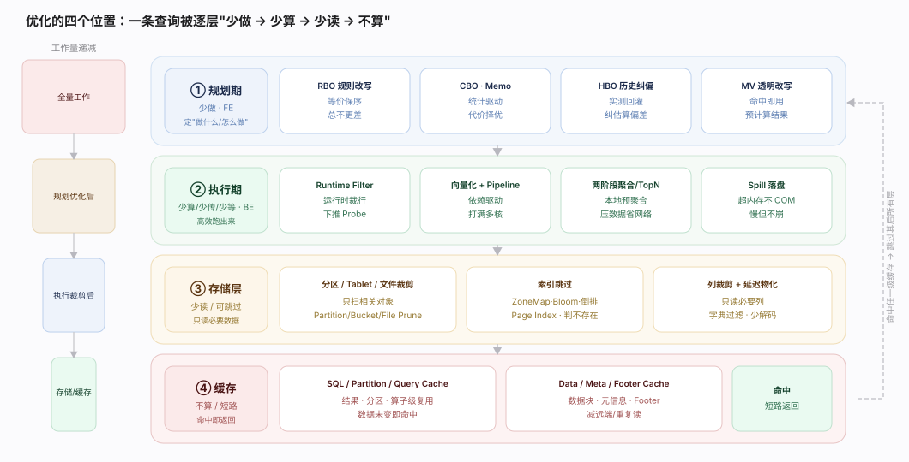
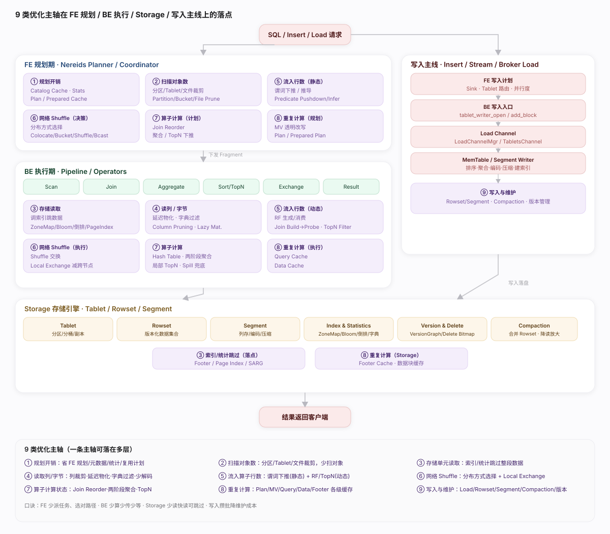
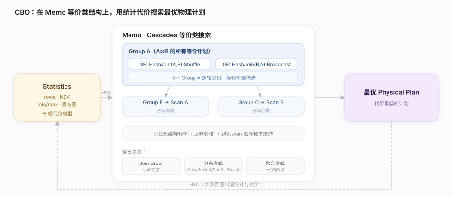
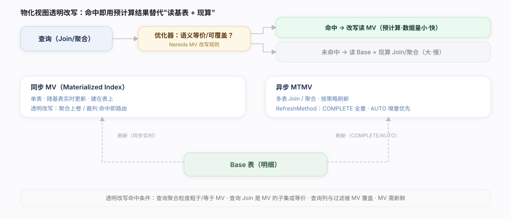
enable_nereids_planner：Nereids 优化器（默认开）。ANALYZE TABLE 手动收集 / 自动收集（采样比例可调）——CBO 质量的前提。enable_sql_cache（SQL/结果）、Partition Cache、Query Cache（算子级）。runtime_filter_type / runtime_filter_mode。| 类别 | 代表规则 | 原理 / 作用 |
|---|---|---|
| 下推 | 谓词下推 · Limit/TopN 下推 · 聚合下推 | 把过滤/限制/聚合尽量贴近数据源，早减行 |
| 裁剪 | 列裁剪（Column Pruning）· 分区/分桶裁剪 | 只读需要的列与分区，少读少解码 |
| 化简 | 常量折叠 · 表达式化简 · 谓词推断（传递） | 编译期算掉常量、推出隐含谓词再下推 |
| 消除 | 消除无用 Project/Sort/Limit · 外连接消除 · 空关系消除 | 删掉不改变结果的算子与分支 |
| 解嵌套 | 子查询解嵌套（Apply → Join） | 相关子查询转 Join，交给 CBO 优化 |
| 规范化 | Join 条件去重/规范 · 常量传播 | 归一化计划，便于匹配与代价择优 |
| 手段 | 机制 | 命中 / 触发 | 代价 |
|---|---|---|---|
| Materialized View | 预算常用 Join/Agg 结果 | 查询语义等价时透明改写 | 存储 + 后台刷新 |
| Runtime Filter | Build 侧运行期生成过滤器 | 下推 Probe 侧 Scan 提前过滤 | 短暂等待、尽力而为 |
| Cache | 多级结果/计划/数据缓存 | 数据未变即命中短路 | 一致性与失效管理 |
| 物化视图 | 范围 | 更新 | 改写 |
|---|---|---|---|
| 同步 MV | 单表 | 随基表实时 | 透明改写 |
| 异步 MTMV | 多表 Join/聚合 | COMPLETE 全量 / AUTO 增量优先 | 透明改写 |
| 缓存层 | 粒度 | 命中条件 | 失效范围 |
|---|---|---|---|
| SQL Cache | 整条 SQL 结果 | 数据未变 | 相关表变更即失效 |
| Partition Cache | 分区级结果 | 该分区未变 | 只失效变更分区 |
| Query Cache | 算子级中间结果 | 子计划可复用 | 依赖数据版本 |
| 形态 | 结构 | 适用 | 代价 |
|---|---|---|---|
| IN | 精确取值集合 | 取值少、选择率高 | 取值多时膨胀 |
| Bloom | 概率位图 | 取值多 | 有假阳性、省内存 |
| MinMax | 上下界 | 范围过滤 | 最轻量、过滤弱 |
| 形态 | 机制 | 适用 |
|---|---|---|
| TopN | 堆维护 top-k + RuntimePredicate 极值下推 Scan | ORDER BY … LIMIT k |
| PartitionTopN | 分组/窗口内各取 top-k | 每组前 N |
| DeferMaterialize TopN | 先读排序列定位 top-k，最后回表取其余列 | 宽表 TopN 减解码 |
| 规模 | 算法 | 说明 |
|---|---|---|
| 一般 | ZigZag / Bushy（Cascades 内枚举重写） | 在 Memo 里探索等价 Join 顺序，产 left-deep 或 bushy 形态 |
| 大规模 | DPHyp（基于超图的动态规划） | 连续 Join 数超阈值时启用，控住组合爆炸；代价导向 |
| 统计项 | 用途 | 失真后果 |
|---|---|---|
| 行数 / 分区行数 | 估基数与代价 | 低估→误广播大表→OOM |
| NDV（唯一值数） | 估选择率与聚合规模 | 高估→错误 Join 顺序 |
| Min/Max · 空值率 | 范围/裁剪估计 | 裁剪失效、扫描放大 |
| 直方图 | 倾斜分布下的选择率 | 倾斜列估偏 |
| 改写场景 | 命中条件 |
|---|---|
| 聚合上卷 | 查询聚合粒度粗于/等于 MV，可再上卷 |
| Join 子集 | 查询 Join 是 MV Join 的子集或等价 |
| 投影/过滤包含 | 查询列与过滤被 MV 覆盖 |
enable_pipeline_engine：Pipeline 引擎（默认）；parallel_pipeline_task_num：并行度（DOP）。enable_spill：Agg/Sort/Join 内存不足落盘，防 OOM。exec_mem_limit：单查询内存上限；query_timeout：超时。| 场景 | 分配方式 | 目的 |
|---|---|---|
| 叶子 Scan | 按数据分布(bucket/tablet scan-range)分给持有副本的 BE,受并行度上限封顶 | 就近读、避免搬数据 |
| Shuffle 后中间 Fragment | 按并行度起多 instance | 提高并行度 |
| Colocate / Bucket Shuffle | instance 按 bucket 对齐、同 bucket 落同 BE | 免网络重分布 |
| 机制 | 规则 | 目的 |
|---|---|---|
| MLFQ 多级反馈 | 新任务进高优子队列,跑久逐级降级 | 长任务不饿死短任务 |
| vruntime | 同级内跑得越少越靠前 | 公平择序 |
| work-stealing | 优先跑本核队列,空了窃取邻核 | 局部性 + 负载均衡 |
| 时间片让出 | 依赖未就绪则让出等唤醒;未跑完累加 vruntime 降级回队尾 | 不阻塞线程 |
| 分发方式 | 模式 | 供给算子 | 目的 |
|---|---|---|---|
| Hash Shuffle | 按 key 重分布，同 key 落同实例 | Shuffle Join、全局聚合 | 保证同 key 汇聚 |
| Broadcast | 小表全量广播到每实例 | Broadcast Join | 省去大表重分布 |
| Gather | 多实例汇聚到单点 | 最终 Sort/Limit、返回客户端 | 收口输出 |
| 类别 | 算子 | 是否阻塞 |
|---|---|---|
| 扫描 | OlapScan（内表）、FileScan（湖仓）、JdbcScan/EsScan（外部源） | 否 |
| 连接 | HashJoin（等值）、NestLoopJoin（非等值/笛卡尔） | Build 侧阻塞 |
| 聚合 | Aggregation（一/两阶段）、Repeat（GROUPING SETS） | 阻塞 |
| 排序 | Sort、TopN、PartitionTopN | Sort 阻塞 |
| 集合 / 窗口 | Union/Intersect/Except、AnalyticEval | 部分阻塞 |
| 交换 | Exchange（Broadcast/Shuffle/Gather）、LocalExchange | 否 |
| 输出 | ResultSink、OlapTableSink | — |
| 功能域 | 代表线程池 | 职责 |
|---|---|---|
| 查询执行 | Fragment / Pipeline 执行池 | 跑 Pipeline Task |
| 写入落盘 | MemTableFlush / HighPriorityFlush | MemTable → Segment |
| 合并 | CumuCompaction / BaseCompaction / SegCompaction / ColdDataCompaction | 各类 Compaction |
| 导入 | GroupCommit / GroupCommitReplayWal | 攒批与 WAL 回放 |
| 冷热 / 迁移 | Cooldown / Migration / Download | 冷数据下沉、副本迁移、下载 |
| 缓存 / IO | BufferedReaderPrefetch / FileCacheBlockDownloader | 预读、File Cache 下载 |
two_phase_commit：两阶段导入（预提交 + 外部触发提交）。group_commit：攒批降低事务/小文件开销。function_column.sequence_col 指定 sequence 列裁决乱序写。| 契约 | 表述 | 边界 |
|---|---|---|
| Snapshot Consistency | 一次查询锁定一个 Version 读到底 | 单查询内一致 |
| Read-Your-Writes | 同会话内自己已提交并发布的写随后可读 | 路由到一致位置 |
| Bounded Eventual | 只读节点因复制延迟可能短暂读不到 | 跨节点、最终收敛 |
| 维度 | 语义 | 裁决 |
|---|---|---|
| 读隔离 | 快照隔离（Snapshot）：锁定一个已发布版本读到底 | 无幻读、不受并发写影响 |
| 写-写 | 同分区并发导入各为独立事务 | 最终值由 Publish 顺序决定 |
| 主键并发 | 同键并发写 | 由 sequence 列裁决 |
| 可见性原子性 | 一批导入整体 VISIBLE 或整体不可见 | 绝不读到半批 |
| 事务锁 | 无跨行事务锁 / 长事务 | 靠 MVCC 版本，读写互不阻塞 |
| 阶段 | 持久化内容 | 数据可见 |
|---|---|---|
| PREPARE | 事务登记（txn_id / Label） | 否 |
| PRECOMMITTED | 数据落盘（Rowset），2PC 预提交 | 否 |
| COMMITTED | 元数据记提交 + 副本 quorum 校验 | 否 |
| VISIBLE | Publish Version 翻牌（主键此时算 Delete Bitmap） | 是 |
| 外部框架动作 | Doris 侧 | 结果 |
|---|---|---|
| checkpoint 前 | 预提交(PRECOMMITTED) | 数据落盘、不可见 |
| checkpoint 成功 | 触发 Commit → Publish | 可见 |
| checkpoint 失败 | Abort | 回滚,两侧成败绑为一个原子决策 |
meta_dir：image + bdb journal）是备份关键，务必定期备份。SHOW FRONTENDS：看各 FE 角色与回放进度（journal id 落后量判延迟）。| 层 | 载体 | 记录内容 | 何时改动 |
|---|---|---|---|
| FE 逻辑元数据 | 全内存 + EditLog + Image + BDBJE 复制 | 库/表/分区、Schema/物化定义、Tablet→BE 副本分布、事务/权限/WG | DDL/事务/调度 |
| BE 物理元数据 | 每盘 OlapMeta(内嵌 RocksDB) | Tablet Meta Header、Rowset Meta(版本→文件)、Delete Bitmap、Pending Publish Info | 导入/Compaction/Publish 落本地 |
| 一致性 | Tablet Report 对账 | FE"逻辑应有" vs BE"物理实有" 周期比对 | 差异触发 Clone/删除 |
| 组件 | 角色 | 特性 |
|---|---|---|
| In-memory | 服务所有读 | 全量常驻内存、最快 |
| EditLog / Journal | 记录每次变更 | 增量、全序、多数派持久 |
| Image | 某位点全量快照 | 恢复起点、截断旧日志 |
| 角色 | 可写 | 参与选主/多数派 | 用途 |
|---|---|---|---|
| Master | 是 | 是 | 唯一写入点，串行化所有元数据变更 |
| Follower | 否 | 是 | 元数据冗余 + 选主候选，读扩展 |
| Observer | 否 | 否 | 只读扩展、异地容灾，不影响选主 |
| 性质 | 含义 | 保障 |
|---|---|---|
| 全序 | 每条日志有单调递增日志号，全局有序 | 所有 FE 同序回放才收敛（状态机复制前提） |
| 提交点 | 复制到多数派才算提交 | 持久性 + 选主时判"哪些已提交不能丢" |
| 幂等回放 | 回放与正向执行严格对称、可重复 | 每个写操作须有配对回放逻辑 |
| 步 | 动作 |
|---|---|
| ① 加载 Image | 读最近全量快照进内存 |
| ② 回放 Journal | 按位点顺序 Replay Image 之后的增量 EditLog |
| ③ 追平 | 到达最新已提交位点 |
| ④ 对外服务 | 选主后 Master 可读写，Follower/Observer 只读 |
cpu_share（软限权重）/ CPU 硬限（cgroup）、memory_limit、enable_memory_overcommit。max_concurrency / max_queue_size / queue_timeout——过载排队而非雪崩。exec_mem_limit（单查询上限）、enable_spill（落盘兜底）。| 资源 | 软限 | 硬限 | 落地 |
|---|---|---|---|
| CPU | 按权重分配空闲算力 | 设上限、空闲也不超配 | cgroup |
| Memory | 组配额、可选超借 | 到限 Spill / 拒绝 | 内存跟踪 |
| 并发 | — | 超阈值查询排队 | Query Queue + 超时 |
| 层级 | 单位 | 隔离粒度 | 落地 |
|---|---|---|---|
| 节点级 | ComputeGroup（按 ResourceTag 分组 BE） | 物理隔离到不同 BE 集，查询按 tag 路由 | 机器划分 |
| 组内 | Workload Group | 同批 BE 内按业务分 CPU/内存/并发 | cgroup |
| 条件（WorkloadMetric） | 动作（WorkloadAction） |
|---|---|
| 查询耗时 / 扫描行数 / 内存 超阈值 | CANCEL_QUERY 取消 |
| 命中某画像 | MOVE_QUERY_TO_GROUP 移到其他资源组 |
| 满足条件 | SET_SESSION 调会话变量（如降并行度） |
| 信号 | 粒度 | 内容 | 用途 |
|---|---|---|---|
| Query Profile | 单条查询 | 算子耗时、行数、内存峰值、等待、RF 效果 | 慢在哪个算子 |
| Audit Log | 语句留痕 | 用户、耗时、扫描/返回行、缓存命中、错误码 | 找坏 SQL、趋势分析 |
| Metrics | 进程/集群 | 内存水位、并发、排队、Compaction Score、副本健康 | 实时告警、观测 |
| 层级 | 配额 / 开关 | 超限动作 |
|---|---|---|
| 进程级 | BE 总内存上限 | 全局回收 / 取消 |
| 查询级 | exec_mem_limit | Spill 或取消 |
| 组级 | Workload Group memory_limit、enable_memory_overcommit | 组内约束 / 是否可超借 |
| 算子级 | Agg/Sort/Join 内存跟踪 | 到阈值触发 Spill |
| 缓存级 | Page/Data Cache 独立配额 | 与查询内存竞争、受限 |
replication_num：副本数（可用性 vs 存储成本/写放大的权衡）。colocate_with 表组按组整体均衡。ALTER SYSTEM DECOMMISSION BACKEND：优雅下线（先迁副本再摘除）。SHOW REPLICA STATUS / ADMIN REPAIR：查看与干预副本健康。| 状态 | 含义 | 调度动作 · 优先级 |
|---|---|---|
| OK / HEALTHY | 副本数够、版本齐、分布对 | 无 |
| REPLICA_MISSING | 存活副本不足 | 补副本 · 高 |
| VERSION_INCOMPLETE | 副本够但版本缺 | Clone 追版本 · 高 |
| REPLICA_RELOCATING | 健康但迁移中（BE 下线） | 迁移中 |
| REDUNDANT | 副本过多 | 删冗余 · 很高（快速释放空间） |
| REPLICA_MISSING_FOR_TAG | 指定 Tag 内健康副本不足 | 按 Tag 补 |
| FORCE_REDUNDANT | 缺/坏但无处可修 | 先删占位副本 |
| COLOCATE_MISMATCH | 不在正确 Colocate 集合 | 按组迁移对齐 |
| COLOCATE_REDUNDANT | 匹配 Colocate 但冗余 | 删冗余 |
| NEED_FURTHER_REPAIR | 某副本需确定性修复 | 定向修复 |
| UNRECOVERABLE | 无健康副本 | 不可恢复 · 告警 |
| REPLICA_COMPACTION_TOO_SLOW | 某副本版本数远多于其他 | 标记 / 干预 |
| 动作 | 触发 | 手段 | 优先级 |
|---|---|---|---|
| Add | 健康副本数低于预期 | 选节点新建、Clone 补足冗余 | 高（可用性） |
| Clone Repair | 副本损坏或落后 | 选健康副本作 Clone 源、追平 version | 高（可用性） |
| Balance | 数据/负载倾斜 | 从繁忙/满盘节点迁到空闲节点 | 低（优化性） |
| 场景 | 处理 | 原因 |
|---|---|---|
| 节点短暂抖动 | 冷却/延迟判定，先观察 | 避免"故障→搬迁→更多故障"风暴 |
| 优雅下线 Decommission | 先迁走副本、确认冗余再摘除 | 不中断服务 |
| Colocate 表组均衡 | 按组整体迁移、保分片对齐 | 保住 Colocate Join 免 Shuffle 前提 |
| 操作 | 机制 | 要点 |
|---|---|---|
| 扩容 | 新增 BE 后均衡逐步迁入 Tablet/副本 | 限速、不影响在线 |
| 缩容 | DECOMMISSION 优雅下线 | 先迁副本、确认冗余再摘除 |
| 再均衡 | 按磁盘使用率、分布均匀度触发 | Colocate 组按组整体迁移 |
| 存算分离 | 计算节点无状态、分钟级扩缩 | 不搬数据，只需缓存预热 |
SHOW ... COMPACTION / 版本数与 compaction score 判断读放大风险。| 任务 | 承接域 | 触发 | 反哺 |
|---|---|---|---|
| Compaction | 存储引擎 | Rowset 堆积 / 分数 | 降读放大 |
| MV Refresh | 优化技术 | 源数据变化 | 保物化新鲜（全量/增量） |
| Statistics | 优化技术 | 定期 / 变化量 | 喂 CBO |
| Checkpoint | 元数据 | Journal 增长 | dump Image、截断旧 EditLog |
| Replica Repair | 集群自愈 | 副本缺失/损坏 | 保可用（决策在自愈） |
| Cleanup / GC | 各域 | 引用消失 | 回收旧 Version、临时文件、失效缓存 |
| 类型 | 频率 | 作用 | 场景 |
|---|---|---|---|
| Cumulative | 高频轻量 | 合并近期增量小 Rowset | 持续写入降读放大 |
| Base | 低频重量 | 增量并入基线大 Rowset | 控空间、清过期 Delete Bitmap |
| Full | 按需 | 全量重整 | Schema Change 后 |
| Vertical | — | 按列分组合并 | 列多时降内存 |
| Single-Replica | — | 一副本压完克隆给其他 | 省重复算力 |
| 策略 | 选 Rowset 依据 | 适用 |
|---|---|---|
| size_based（默认） | 按 Rowset 大小分层 + cumulative_point 推进 | 通用负载 |
| time_series | 按时间 / 文件数 / 目标大小（goal_size）触发 | 时序、持续追加 |